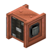

会升降的软管，范围抽液与排液。
参数
材料铜机壳 + 干海带块 + 铜板
动力旋转升降软管
速度取决于管道流量
详细教程
怎么获得
竖排合成：上方铜机壳、中间干海带块、下方铜板，一次做出 1 个软管滑轮；铜机壳由铜锭右击去皮原木得到。合成一次只出 1 个，做自动化要多备。
滑轮要挂在能接动力的位置，另一侧再接流体管道，两头都接好才算一套完整的抽排装置；缺一头就只能干看着，泵再强也抽不动。动力面朝哪一侧，摆放前就要想好。
怎么用
给它旋转力，软管末端会升高或下降，反向旋转则收起软管；软管探进液体里就能抽，也能把管道送来的液体在下方放成源头。软管不会无限伸长，落点别设太远。
抽取和排放的快慢取决于管道里的流量，想快就并几台动力泵；光加快滑轮转速并不会让液体流得更猛，这点常被新手误解。泵的台数比滑轮转速更影响效率。
进阶
软管末端伸进大片水体时可以持续抽，不容易中途断流；抽小水坑则要留意液面下降后软管还够不够长，抽空就只剩空气。软管停在液面上方就抽不到东西。
收起的软管不工作，自动化里先用转速控制器把高度定死；用离合器切断动力，软管就会停在当前位置，不会自己滑下去。红石信号一断，离合器又会重新接上。
获取方式
官方教程 · 使用软管滑轮抽取或排放流体
- 软管滑轮可以用于方便地对一个较大区域进行抽取流体或填满流体的操作
- 通过输入动力可以调节软管末端的高度
- 反转动力输入的方向可以收起软管
- 管道可以连接在另一侧
- 连接的管道可以将流体输入到软管滑轮中，软管会在下方排出口处放置流体源……
- ……或者提供吸力来抽取世界中的流体
- 软管滑轮的抽取/排放速度取决于连接管道中流体的流速